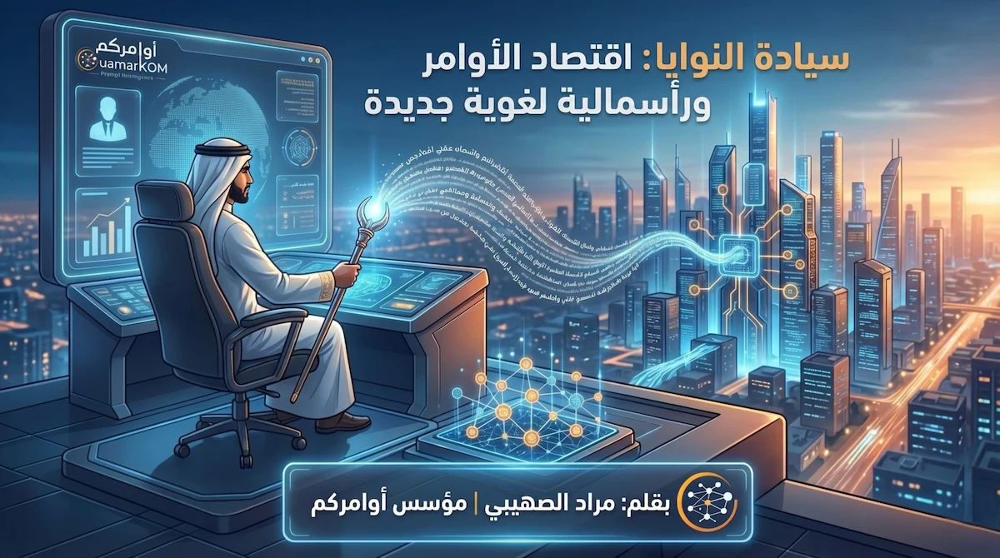
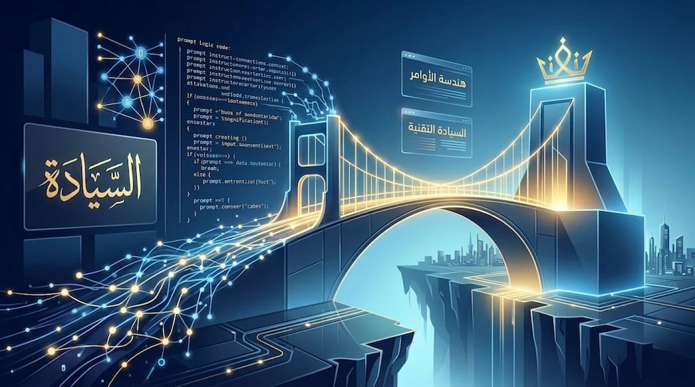
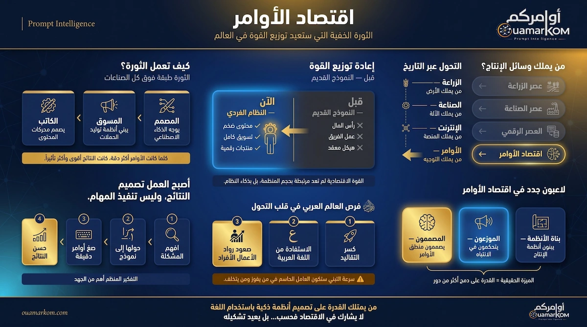
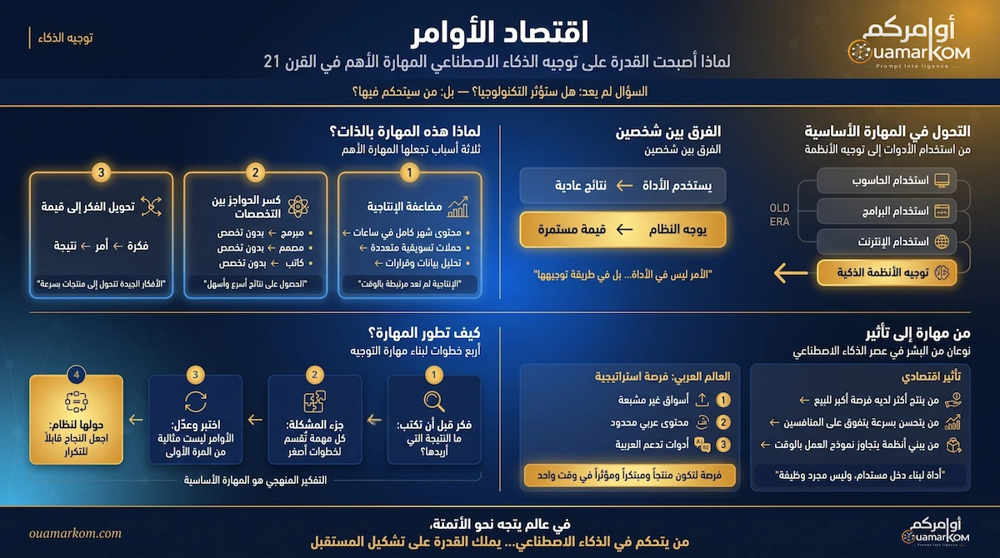
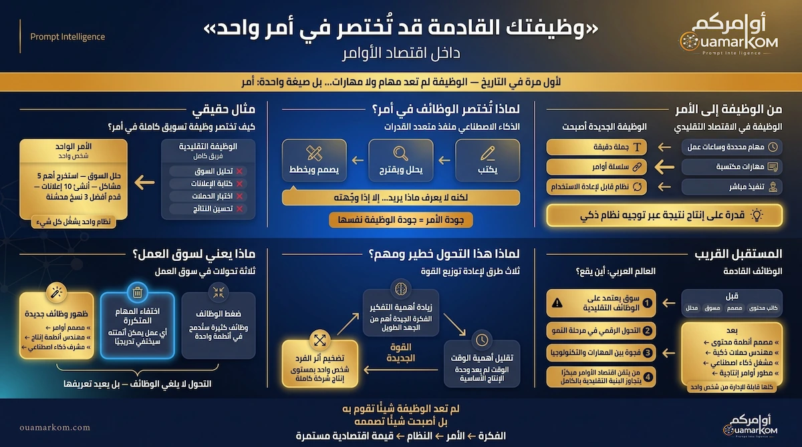
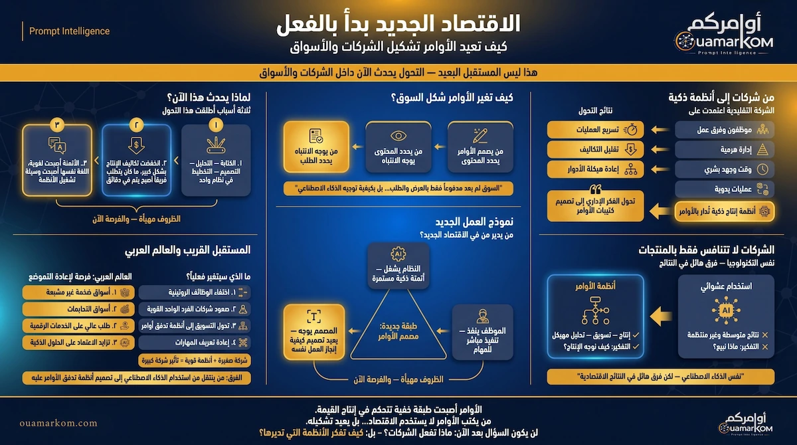
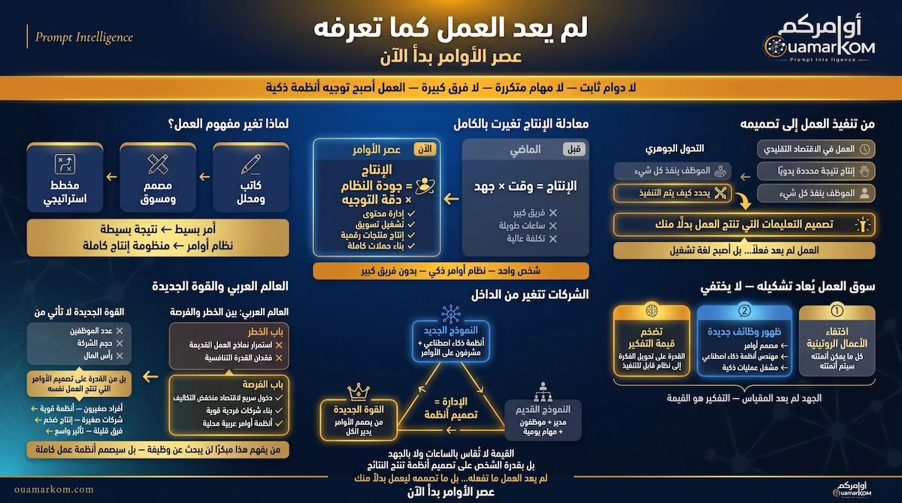
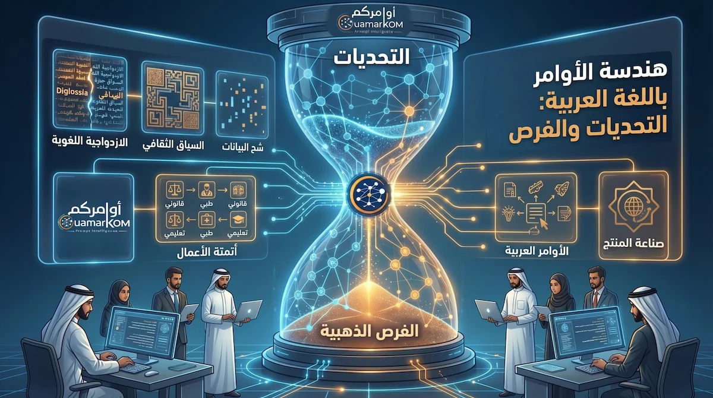
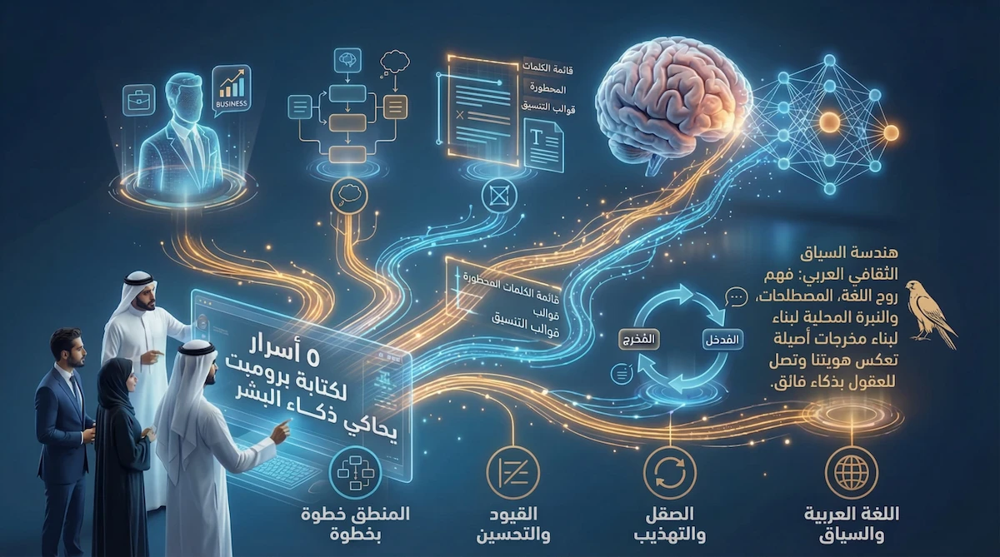
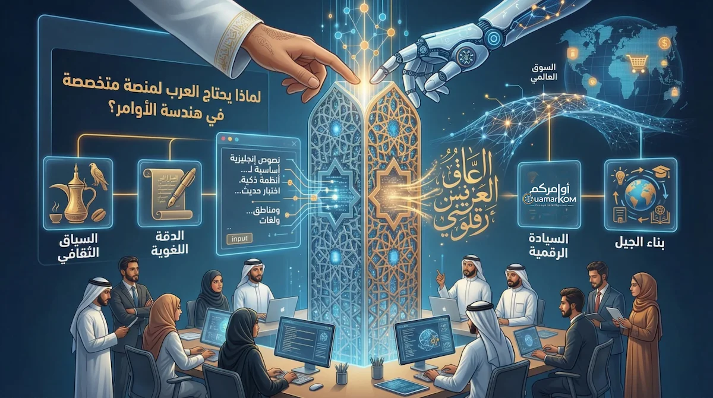

سِيادة النوايا: "اقتصاد الأوامر" وبزوغ الرأسمالية اللغوية الجديدة
بقلم مراد الصهيبي: لماذا ننتقل اليوم من "البرمجة بالرموز" إلى "البرمجة بالنوايا"؟ وكيف تتحول الكلمة إلى الأصل الرأسمالي الأكثر ندرة في ميزانيات الشركات...
اقرأ الرؤية القيادية ←دليلك المعرفي لاحتراف هندسة الأوامر واقتصاد المستقبل

بقلم مراد الصهيبي: لماذا ننتقل اليوم من "البرمجة بالرموز" إلى "البرمجة بالنوايا"؟ وكيف تتحول الكلمة إلى الأصل الرأسمالي الأكثر ندرة في ميزانيات الشركات...
اقرأ الرؤية القيادية ←
استكشف كيف ستصبح "البرومبتات" هي العملة الجديدة في سوق العمل، ولماذا تتسابق الشركات لتوظيف خبراء الذكاء الاصطناعي...
اقرأ المقال الكامل ←
بقلم مراد الصهيبي: اكتشف كيف تتحول اللغة العربية من وعاء للأدب إلى أداة برمجية سيادية، وكيف نمتلك ميزة تنافسية في اقتصاد المعرفة العالمي...
اقرأ المقال الاستراتيجي ←
هل يمكن لفرد واحد أن ينافس مؤسسات كبرى؟ اكتشف كيف يعيد اقتصاد الأوامر تعريف "وسائل الإنتاج" ويحول اللغة إلى قوة اقتصادية لا تُقهر.
اكشف الثورة الخفية ←
اكتشف الفرق الجوهري بين "استخدام الأدوات" و"توجيه الأنظمة"، وكيف تصبح القوة في يد من يعرف كيف يقود الذكاء الاصطناعي وليس من يعمل أكثر.
أتقن المهارة الآن ←
لم يعد المال أو المصانع هم محرك العالم الوحيد. اكتشف كيف أصبحت "الكلمة" هي الوحدة الأساسية الجديدة للقوة الاقتصادية والنفوذ العالمي.
امتلك زمام القوة ←
لماذا يتحول الموظف من منفذ مهام إلى مشغل أنظمة؟ اكتشف كيف يمكن لأمر واحد متقن أن يعوض عمل فريق كامل ويعيد تعريف مسارك المهني.
صمم وظيفتك القادمة ←
اكتشف كيف يتحول التفكير الإداري إلى "تصميم أوامر"، وكيف تمكن الأنظمة الذكية الشركات الصغيرة من سحق المنافسين الكبار عبر هندسة الإنتاج.
غير قواعد اللعبة ←
لماذا لم يعد الجهد البدني والوقت مقياساً للإنتاج؟ اكتشف كيف تتحول الوظيفة إلى "لغة تشغيل" وكيف تصمم أنظمة تعمل بالنيابة عنك في 2026.
ادخل عصر الأوامر ←
لماذا يصعب هندسة الأوامر بالعربية؟ اكتشف كيف نتجاوز في "أوامركم" فجوة البيانات لنصنع ذكاءً اصطناعياً يفهم روح لغتنا وثقافتنا بعمق...
اقرأ التحليل التقني ←
هل تحصل على نتائج عادية؟ تعلم التقنيات النفسية والبرمجية لتحويل ChatGPT إلى خبير متخصص ينفذ مهامك بدقة احترافية...
اقرأ الأسرار الخمسة ←
هل تدرك أن الثروة القادمة لا تخرج من باطن الأرض، بل من أطراف أصابعك؟ اكتشف كيف يغير اقتصاد الأوامر مفهوم العمل والرزق في 2026.
اقرأ المزيد ←
التحديات اللغوية والثقافية في الذكاء الاصطناعي تتطلب حلولاً عربية المنشأ. اكتشف كيف تسد "أوامركم" هذه الفجوة...
اقرأ الرؤية العربية ←